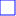
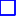
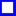

<!doctype html>
<html lang="en">
    <head>
        <meta charset="utf-8">
        <meta http-equiv="X-UA-Compatible" content="IE=edge">
        <meta name="viewport" content="initial-scale=1,user-scalable=no,maximum-scale=1,width=device-width">
        <meta name="mobile-web-app-capable" content="yes">
        <meta name="apple-mobile-web-app-capable" content="yes">
        <link rel="stylesheet" href="css/leaflet.css"><link rel="stylesheet" href="css/L.Control.Locate.min.css">
        <link rel="stylesheet" href="css/qgis2web.css"><link rel="stylesheet" href="css/fontawesome-all.min.css">
        <style>
        html, body, #map {
            width: 100%;
            height: 100%;
            padding: 0;
            margin: 0;
        }
        </style>
        <title></title>
    </head>
    <body>
        <div id="map">
        </div>
        <script src="js/qgis2web_expressions.js"></script>
        <script src="js/leaflet.js"></script><script src="js/L.Control.Locate.min.js"></script>
        <script src="js/leaflet.rotatedMarker.js"></script>
        <script src="js/leaflet.pattern.js"></script>
        <script src="js/leaflet-hash.js"></script>
        <script src="js/Autolinker.min.js"></script>
        <script src="js/rbush.min.js"></script>
        <script src="js/labelgun.min.js"></script>
        <script src="js/labels.js"></script>
        <script src="data/5.js"></script>
        <script src="data/6.js"></script>
        <script src="data/50x50EBBA2_7.js"></script>
        <script src="data/10x10_8.js"></script>
        <script src="data/1x1_9.js"></script>
        <script>
        var map = L.map('map', {
            zoomControl:true, maxZoom:19, minZoom:8
        }).fitBounds([[51.74943533822408,37.441094430099184],[53.65317218288671,41.16305330056904]]);
        var hash = new L.Hash(map);
        map.attributionControl.setPrefix('<a href="https://github.com/tomchadwin/qgis2web" target="_blank">qgis2web</a> &middot; <a href="https://leafletjs.com" title="A JS library for interactive maps">Leaflet</a> &middot; <a href="https://qgis.org">QGIS</a>');
        var autolinker = new Autolinker({truncate: {length: 30, location: 'smart'}});
        L.control.locate({locateOptions: {maxZoom: 19}}).addTo(map);
        var bounds_group = new L.featureGroup([]);
        function setBounds() {
            map.setMaxBounds(map.getBounds());
        }
        map.createPane('pane_ESRI_0');
        map.getPane('pane_ESRI_0').style.zIndex = 400;
        var layer_ESRI_0 = L.tileLayer('https://server.arcgisonline.com/ArcGIS/rest/services/World_Imagery/MapServer/tile/{z}/{y}/{x}', {
            pane: 'pane_ESRI_0',
            opacity: 1.0,
            attribution: '',
            minZoom: 8,
            maxZoom: 19,
            minNativeZoom: 0,
            maxNativeZoom: 20
        });
        layer_ESRI_0;
        map.createPane('pane_Google_1');
        map.getPane('pane_Google_1').style.zIndex = 401;
        var layer_Google_1 = L.tileLayer('https://mt1.google.com/vt/lyrs=s&x={x}&y={y}&z={z}', {
            pane: 'pane_Google_1',
            opacity: 1.0,
            attribution: '<a href="https://www.google.at/permissions/geoguidelines/attr-guide.html">Map data ©2015 Google</a>',
            minZoom: 8,
            maxZoom: 19,
            minNativeZoom: 0,
            maxNativeZoom: 20
        });
        layer_Google_1;
        map.createPane('pane_OSM_2');
        map.getPane('pane_OSM_2').style.zIndex = 402;
        var layer_OSM_2 = L.tileLayer('http://tile.openstreetmap.org/{z}/{x}/{y}.png', {
            pane: 'pane_OSM_2',
            opacity: 1.0,
            attribution: '<a href="https://www.openstreetmap.org/copyright">© OpenStreetMap contributors, CC-BY-SA</a>',
            minZoom: 8,
            maxZoom: 19,
            minNativeZoom: 0,
            maxNativeZoom: 19
        });
        layer_OSM_2;
        map.addLayer(layer_OSM_2);
        map.createPane('pane_OpenTopoMap_3');
        map.getPane('pane_OpenTopoMap_3').style.zIndex = 403;
        var layer_OpenTopoMap_3 = L.tileLayer('https://a.tile.opentopomap.org/{z}/{x}/{y}.png', {
            pane: 'pane_OpenTopoMap_3',
            opacity: 1.0,
            attribution: '<a href="https://www.openstreetmap.org/copyright">Kartendaten: © OpenStreetMap-Mitwirkende, SRTM | Kartendarstellung: © OpenTopoMap (CC-BY-SA)</a>',
            minZoom: 8,
            maxZoom: 19,
            minNativeZoom: 0,
            maxNativeZoom: 18
        });
        layer_OpenTopoMap_3;
        map.createPane('pane__4');
        map.getPane('pane__4').style.zIndex = 404;
        var layer__4 = L.tileLayer('http://maps.marshruty.ru/ml.ashx?al=1&i=1&x={x}&y={y}&z={z}', {
            pane: 'pane__4',
            opacity: 1.0,
            attribution: '',
            minZoom: 8,
            maxZoom: 19,
            minNativeZoom: 0,
            maxNativeZoom: 19
        });
        layer__4;
        function pop__5(feature, layer) {
            var popupContent = '<table>\
                    <tr>\
                        <td colspan="2">' + (feature.properties['NAME'] !== null ? autolinker.link(feature.properties['NAME'].toLocaleString()) : '') + '</td>\
                    </tr>\
                </table>';
            layer.bindPopup(popupContent, {maxHeight: 400});
        }

        function style__5_0() {
            return {
                pane: 'pane__5',
                opacity: 1,
                color: 'rgba(228,26,28,1.0)',
                dashArray: '',
                lineCap: 'square',
                lineJoin: 'bevel',
                weight: 3.0,
                fillOpacity: 0,
                interactive: false,
            }
        }
        map.createPane('pane__5');
        map.getPane('pane__5').style.zIndex = 405;
        map.getPane('pane__5').style['mix-blend-mode'] = 'normal';
        var layer__5 = new L.geoJson(json__5, {
            attribution: '',
            interactive: false,
            dataVar: 'json__5',
            layerName: 'layer__5',
            pane: 'pane__5',
            onEachFeature: pop__5,
            style: style__5_0,
        });
        bounds_group.addLayer(layer__5);
        map.addLayer(layer__5);
        function pop__6(feature, layer) {
            var popupContent = '<table>\
                    <tr>\
                        <td colspan="2">' + (feature.properties['name'] !== null ? autolinker.link(feature.properties['name'].toLocaleString()) : '') + '</td>\
                    </tr>\
                </table>';
            layer.bindPopup(popupContent, {maxHeight: 400});
        }

        function style__6_0() {
            return {
                pane: 'pane__6',
                opacity: 1,
                color: 'rgba(228,26,28,1.0)',
                dashArray: '',
                lineCap: 'square',
                lineJoin: 'bevel',
                weight: 2.0,
                fillOpacity: 0,
                interactive: false,
            }
        }
        map.createPane('pane__6');
        map.getPane('pane__6').style.zIndex = 406;
        map.getPane('pane__6').style['mix-blend-mode'] = 'normal';
        var layer__6 = new L.geoJson(json__6, {
            attribution: '',
            interactive: false,
            dataVar: 'json__6',
            layerName: 'layer__6',
            pane: 'pane__6',
            onEachFeature: pop__6,
            style: style__6_0,
        });
        bounds_group.addLayer(layer__6);
        map.addLayer(layer__6);
        function pop_50x50EBBA2_7(feature, layer) {
            var popupContent = '<table>\
                    <tr>\
                        <td colspan="2"><strong>Квадрат 50x50 км в сети EBBA2:</strong><br />' + (feature.properties['Квадрат 50x50 км в сети EBBA2:'] !== null ? autolinker.link(feature.properties['Квадрат 50x50 км в сети EBBA2:'].toLocaleString()) : '') + '</td>\
                    </tr>\
                    <tr>\
                        <td colspan="2"><strong>Координаты углов в СК WGS-84:</strong><br />' + (feature.properties['Координаты углов в СК WGS-84:'] !== null ? autolinker.link(feature.properties['Координаты углов в СК WGS-84:'].toLocaleString()) : '') + '</td>\
                    </tr>\
                </table>';
            layer.bindPopup(popupContent, {maxHeight: 400});
        }

        function style_50x50EBBA2_7_0() {
            return {
                pane: 'pane_50x50EBBA2_7',
                opacity: 1,
                color: 'rgba(0,0,255,1.0)',
                dashArray: '',
                lineCap: 'square',
                lineJoin: 'bevel',
                weight: 3.0,
                fillOpacity: 0,
                interactive: true,
            }
        }
        map.createPane('pane_50x50EBBA2_7');
        map.getPane('pane_50x50EBBA2_7').style.zIndex = 407;
        map.getPane('pane_50x50EBBA2_7').style['mix-blend-mode'] = 'normal';
        var layer_50x50EBBA2_7 = new L.geoJson(json_50x50EBBA2_7, {
            attribution: '',
            interactive: true,
            dataVar: 'json_50x50EBBA2_7',
            layerName: 'layer_50x50EBBA2_7',
            pane: 'pane_50x50EBBA2_7',
            onEachFeature: pop_50x50EBBA2_7,
            style: style_50x50EBBA2_7_0,
        });
        bounds_group.addLayer(layer_50x50EBBA2_7);
        function pop_10x10_8(feature, layer) {
            var popupContent = '<table>\
                    <tr>\
                        <td colspan="2"><strong>Квадрат 10x10 км:</strong><br />' + (feature.properties['Квадрат 10x10 км:'] !== null ? autolinker.link(feature.properties['Квадрат 10x10 км:'].toLocaleString()) : '') + '</td>\
                    </tr>\
                    <tr>\
                        <td colspan="2"><strong>Обозначение в сети UTM:</strong><br />' + (feature.properties['Обозначение в сети UTM:'] !== null ? autolinker.link(feature.properties['Обозначение в сети UTM:'].toLocaleString()) : '') + '</td>\
                    </tr>\
                    <tr>\
                        <td colspan="2"><strong>Входит в квадрат 50x50 км сети EBBA:</strong><br />' + (feature.properties['Входит в квадрат 50x50 км сети EBBA:'] !== null ? autolinker.link(feature.properties['Входит в квадрат 50x50 км сети EBBA:'].toLocaleString()) : '') + '</td>\
                    </tr>\
                    <tr>\
                        <td colspan="2"><strong>Координаты углов в СК WGS-84:</strong><br />' + (feature.properties['Координаты углов в СК WGS-84:'] !== null ? autolinker.link(feature.properties['Координаты углов в СК WGS-84:'].toLocaleString()) : '') + '</td>\
                    </tr>\
                </table>';
            layer.bindPopup(popupContent, {maxHeight: 400});
        }

        function style_10x10_8_0() {
            return {
                pane: 'pane_10x10_8',
                opacity: 1,
                color: 'rgba(0,0,255,1.0)',
                dashArray: '',
                lineCap: 'square',
                lineJoin: 'bevel',
                weight: 2.0,
                fillOpacity: 0,
                interactive: true,
            }
        }
        map.createPane('pane_10x10_8');
        map.getPane('pane_10x10_8').style.zIndex = 408;
        map.getPane('pane_10x10_8').style['mix-blend-mode'] = 'normal';
        var layer_10x10_8 = new L.geoJson(json_10x10_8, {
            attribution: '',
            interactive: true,
            dataVar: 'json_10x10_8',
            layerName: 'layer_10x10_8',
            pane: 'pane_10x10_8',
            onEachFeature: pop_10x10_8,
            style: style_10x10_8_0,
        });
        bounds_group.addLayer(layer_10x10_8);
        map.addLayer(layer_10x10_8);
        function pop_1x1_9(feature, layer) {
            var popupContent = '<table>\
                    <tr>\
                        <td colspan="2"><strong>Квадрат 1x1 км:</strong><br />' + (feature.properties['Квадрат 1x1 км:'] !== null ? autolinker.link(feature.properties['Квадрат 1x1 км:'].toLocaleString()) : '') + '</td>\
                    </tr>\
                    <tr>\
                        <td colspan="2"><strong>Обозначение квадрата в сети UTM 1x1 км:</strong><br />' + (feature.properties['Обозначение квадрата в сети UTM 1x1 км:'] !== null ? autolinker.link(feature.properties['Обозначение квадрата в сети UTM 1x1 км:'].toLocaleString()) : '') + '</td>\
                    </tr>\
                    <tr>\
                        <td colspan="2"><strong>Входит в квадрат 50x50 км сети EBBA:</strong><br />' + (feature.properties['Входит в квадрат 50x50 км сети EBBA:'] !== null ? autolinker.link(feature.properties['Входит в квадрат 50x50 км сети EBBA:'].toLocaleString()) : '') + '</td>\
                    </tr>\
                    <tr>\
                        <td colspan="2"><strong>Координаты углов в СК WGS-84:</strong><br />' + (feature.properties['Координаты углов в СК WGS-84:'] !== null ? autolinker.link(feature.properties['Координаты углов в СК WGS-84:'].toLocaleString()) : '') + '</td>\
                    </tr>\
                </table>';
            layer.bindPopup(popupContent, {maxHeight: 400});
        }

        function style_1x1_9_0() {
            return {
                pane: 'pane_1x1_9',
                opacity: 1,
                color: 'rgba(0,0,255,1.0)',
                dashArray: '',
                lineCap: 'square',
                lineJoin: 'bevel',
                weight: 1.0,
                fillOpacity: 0,
                interactive: true,
            }
        }
        map.createPane('pane_1x1_9');
        map.getPane('pane_1x1_9').style.zIndex = 409;
        map.getPane('pane_1x1_9').style['mix-blend-mode'] = 'normal';
        var layer_1x1_9 = new L.geoJson(json_1x1_9, {
            attribution: '',
            interactive: true,
            dataVar: 'json_1x1_9',
            layerName: 'layer_1x1_9',
            pane: 'pane_1x1_9',
            onEachFeature: pop_1x1_9,
            style: style_1x1_9_0,
        });
        bounds_group.addLayer(layer_1x1_9);
        var baseMaps = {};
        L.control.layers(baseMaps,{' Сетка 1x1 км на г. Липецк': layer_1x1_9,' Сетка 10x10 км на Липецкую обл': layer_10x10_8,' Сетка 50x50 км EBBA2': layer_50x50EBBA2_7,' Городской округ Город Липецк': layer__6,' Граница Липецкой области': layer__5,"Карты Генштаб ГГЦ": layer__4,"Карта OpenTopoMap": layer_OpenTopoMap_3,"Карта OSM": layer_OSM_2,"Космоснимки Google": layer_Google_1,"Космоснимки ESRI": layer_ESRI_0,}).addTo(map);
        setBounds();
        resetLabels([layer_50x50EBBA2_7,layer_10x10_8,layer_1x1_9]);
        map.on("zoomend", function(){
            resetLabels([layer_50x50EBBA2_7,layer_10x10_8,layer_1x1_9]);
        });
        map.on("layeradd", function(){
            resetLabels([layer_50x50EBBA2_7,layer_10x10_8,layer_1x1_9]);
        });
        map.on("layerremove", function(){
            resetLabels([layer_50x50EBBA2_7,layer_10x10_8,layer_1x1_9]);
        });
        </script>
    </body>
</html>
